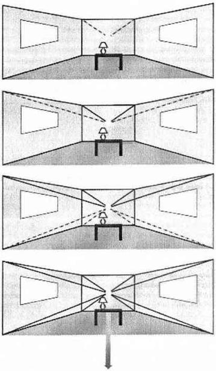
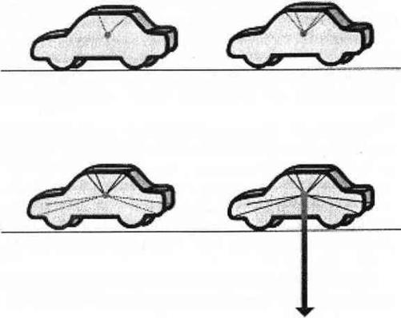

İLERİ TEKNİKLER
Siz geliştikçe topraklama ve imaj yaratma yetenekleriniz de sizinle birlikte gelişecektir. Öğrendiklerinizi uygulama becerilerinizdeki iniş çıkışlar normal ve sağlıklıdır. Eğer bu noktada topraklamanız size sahici gelmiyorsa size sadece birinci çakranıza odaklanmak yerine tüm çakra sisteminize bakmanızı öneririm.
Çoğu zaman topraklamada yaşanan zorluğun nedeni iletişim çakraları olan dördüncü ve beşinci çakralardaki; koruyucu çakra olan üçüncü çakradaki ve dünyevi merkezli ayak çakralarındaki sorunlardır. Çakra sistemi bloke olduğunda ya da gerginleştiğinde beden ile ruh arasındaki enerji akışı da bloke olur. Lütfen bu bölümü incelemek için zaman ayırın, ancak hala topraklamada sorun yaşıyorsanız önümüzdeki bölümlerde daha çok yardım alacağınızı bilin.
Bedeninizi toprakladığınız zaman orada yaşamak inanılmayacak kadar daha kolaydır. Bu kadar basit. Aynı şey eviniz, işiniz, arabanız, kafanızın içindeki düzenlediğiniz oda, auranız ya da bulunduğunuz herhangi bir yer içinde geçerlidir. Topraklama, toprakladığınız şey, ruhunuz ve dünyanın merkezini birbirine bağlar ve bir bütün oluşturur. Topraklama hem enerji fazlasını atabileceğiniz bir yer hem de enerji bakımından sonsuz, güvenli, yeni ve farkındalık taşıyan bir kaynaktır. Ancak farkındalık sorumluluk ister. Bu yüzden topraklamanın kurallarını öğrenmeniz gereklidir.
İLERİ TOPRAKLAMA KURALLARI
Mekanların ve nesnelerin topraklanma kuralları insanların topraklanma kuralları ile benzerlik gösterir. Bir başkasını topraklamamanız gerektiği gibi bir başkasının evini, işyerini, arabasını ya da bilgisayarını da topraklamamalısınız. Eşyalar, binalar ve makinelerin kendi enerjileri, kendi karmaları ve bunlara sahip olan kişilerle ortak kaderleri vardır. Sizin topraklama kordonunuzun enerjisi bu kadere müdahale eder.
Eğer başka insanlara ait şeyleri topraklarsanız onların hayatlarına müdahale etmiş olursunuz. Bu doğru değildir. Kendi enerjinize yoğunlaşın ve başkalarının hayatlarını yaşamaya çalışmayın. Başkalarının mallarını ve makinelerini topraklamak sizin dikkatinizi, sahipliğinizi ve sorumluluğunuzu topraklanan şeye geçirecektir. Eğer eşyanın, mekanın ya makinenin bir bölümü veya tümü size aitse o zaman bunları topraklamak hakkına sahipsiniz. Ama değilse o zaman karışmamalısınız.
Sahibi olduğunuz eşyaları ve mekanları topraklamayı öğrenmeden önce size bu topraklama kurallarındaki bazı özel noktaları açıklamalıyım.
Mekanları Topraklamak: Eğer bir başkasına ait bir evin bir odasında yaşıyorsanız ya da bir başkasına ait bir binanın bir yerinde çalışıyorsanız kendinize ait olan mekanı topraklayabilirsiniz. Çalışma ve uyuma alanlarınız daima topraklanmalıdır ama size ait olmayan kısımlarla ilgilenmemelisiniz. Örneğin, ortak kullanımdaki bir mutfağı topraklamamalısınız çünkü sadece size ait bir mekan değildir. Kendi topraklama kordonunuz yemeğinizi pişirdiğiniz süre içinde sizin için yeterli olacaktır.
Eğer çalıştığınız ya da yaşadığınız tamamen size ait bir mekanınız yoksa auranızın daima topraklanmış bir halde olmasına dikkat edin. Normal topraklama kordonunuza bir aura topraklama kordonu eklemek size ihtiyacınız olan kişisel alanı sağlayacaktır. Kişisel alan bir ihtiyaçtır.
Sorumlulukları Topraklamak: Bir başkasına ait bir eşyayı ödünç aldığımda; birinin arabasını ya da bilgisayarını kullandığımda veya evine göz kulak olduğumda bunlardan sorumlu olurum. Eğer sorumluysam o zaman onları kullandığım süre içinde benim enerjim onlardan sorumlu olacağından o zaman onları topraklarım. Eğer sorumluluğum altında olan bir eşyanın başına bir şey gelirse bunu benim halletmem gerekir. Sorumluluğum altındaki her şey benim yolum, benim alacağım dersler ve benim karmamla etkileşir. Bir başkasının eşyasını ödünç aldığımda o kişinin duygularını da ödünç almak istemem. Ödünç aldığım eşyaları hemen topraklar ve her kullanışımda da topraklamamı yenilerim.
Ödünç aldığım şeyleri geri verirken topraklama kordonumu onlardan çıkarırım. Bu çok önemlidir çünkü nasıl ben ödünç aldığım eşyanın sahibinin enerjisi ile birleşmek istemezsem eşyanın sahibi de benim enerjimle birleşmek istemez. Güvenlik kuralları gereğince eğer o kişi topraklama yöntemleri hakkında fikir sahibiyse ona yaptığımı anlatırım; değilse o zaman bir şey anlatmam.
Araçları Topraklamak: Bu, önceki iki kuralın toplamıdır. Araç, makine ve kullanım tecrübesi gerektiren eşyaları kullanırken onlardan sorumlu olmanız beklenir. Bu yüzden onların sahibi olmasanız bile onları topraklamalısınız. Kullanmakta olduğunuz matkap ya da bilgisayarın zaten sizinle bir enerji bağı vardır. Kullandığınız süre boyunca o aleti topraklarsanız o zaman bu bağı daha güvenli, daha güçlü ve daha gerçek kılarsınız. Evinizde ya da işinizde kullandığınız araçları topraklamak bunları kırılmaya, bozulmaya, kaybolmaya karşı korur.
Araçlar derken, işyerinizde kullandığınız tüm araçları, uçakları, metroyu, kiralık iş araçlarını ve hatta asansörleri kast ediyorum. İş makineleri ve iş aletleri, topraklama konusunda en belirsiz alanlardır çünkü sahipleri tek kişi değildir. Benim kanıma göre kullanıcılar eğer bunları topraklarsa büyük bir hizmet yaparlar.
İyileşme Mekanını Topraklamak: Ben bedenimin iyileştirildiği her yeri (masaj odaları, akupunktur uzmanımın ofisi) topraklarım, çünkü profesyonel bir iyileşme seansının ücretini ödemekteyim ve yabancı hiçbir enerjinin bu işlemi engellemesine izin veremem. Böylece istediğim ve parasını ödediğim tedaviyi görmek için bedenimin kendini güvende hissetmesi için topraklama yaparım.
Eğer bu kitabı okuduğunuz ya da meditasyon yaptığınız özel bir mekanınız varsa buranın topraklandığından emin olun. Ben ders verdiğim mekanları daima topraklarım çünkü onların açık ve kolay öğrenilebilir yerler olmalarını isterim. Tekrar söylemem gerekirse kendimi mümkün olan her şekilde korurum. Tedavim sonuçlandığı zaman bir dahaki sefere kadar topraklama kordonunu bırakırım.
MEKANLAR NASIL TOPRAKLANIR?
Bu, öğrenmesi değil ama açıklaması zor bir yöntemdir (Şekil 8). Bir mekan için yarattığınız topraklama kordonu, o mekan ister bir ev, ister bir oda, ister bir bölme ister bir tezgah olsun, mekanın sahip olduğu alanı tanımlar. Bir mekanı topraklarken topraklayacağınız mekanın enerji sınırlarını belirler ve seçtiğiniz alanın en üst ve en alt köşelerine birer kordon yerleştirirsiniz.
Tavandan başlayan dört altın kordon ve şimdiki zaman enerjisini hayal edin; sonra bunları topraklayacağınız mekanın en üst köşelerine bağlayın. Kordonlar bağlandıktan sonra bunları mekanın tam orta noktasında birleşecek şekilde uzatın. Bu orta nokta göz hizasında olmalıdır.
Topraklayacağınız mekanın en alttaki köşelerine de dört kordon bağlayın ve bunları tavandan sarkıttığınız kordonlarla birleşecek şekilde mekanın ortasında toplayın. Bu sekiz kordon, topraklayacağınız mekanın tam ortasından buluşmalıdır.
Şimdi istediğiniz renkte bir topraklama kordonunu bütün bu kordonların birleşme noktasına bağlayın (bu enerji bağlantısının topraklayacağınız mekanın birinci çakrası olduğunu farz edin) ve gezegenin merkezine yollayın. Bu kordonu çapalayın. Artık mekanınız topraklanmıştır.
Mekan topraklama kordonunuzu, sağlamlığından emin olmak için birkaç kez kontrol etmeniz gerekecektir. Görüntü düzenli aralıklarla kayboluyorsa, topraklanmamış biri bu alanı kullanıyor ve bilmeden kordonu çekiştiriyor olabilir. Böyle bir durumda en doğrusu sadece altın kordonlar kullanmak olacaktır çünkü altın nötrdür ve iyileştirici enerjiyi kişilerden arındırır. Başka biri bilmeden sizin topraklama kordonunuzu tutacak olursa altın kordon bu kişinin sizin enerjiniz içinde tutsak olmasını engeller. Sadece iyileştirici bir etki alır. Altın kordon kullanırsanız bilmeden kordona dokunan biri şifanın sizden geldiğini anlamayacaktır; tabii şayet çok güçlü sezgileri yoksa.
Herkese ait bir mekanın size ait köşesini topraklarken bu köşeyi topraklanmamış hediyeler ve çiçeklerden oluşan bir battaniye ile çevrelemeniz iyi bir fikir olacaktır. Bu hayali battaniye sınırlarınızı belirlemenize yardımcı olur ve başkalarının kordonlarınızı elleyip işinizi bozmasını engeller. Hediyeler başkalarına verilmek için yaratıldığından bu bir sorun teşkil etmeyecektir. Üstelik topraklanmamış hediyeleri yaratmak kolaydır.

Şekil 8. Mekanları Topraklamak
Ben işyerimi içeri her girişimde topraklarım. Daha önceki topraklama kordonumun orada olup olmadığına bakmam bile. Başkalarıyla ortak kullandığım alanların bana ait olan kısmını daima yeniden topraklamak isterim. Topraklanmış bir ev, ofis ya da başka mekan, kafamın içindeki odada kalmamı ve nöbetçimi yeniden hatırlamamı sağlar. Tüm bu ruhsal araçların kullanımı çevremizdekilerin de sağlıklı olmalarını destekleyen bir yöntemdir.
Evinizi, işyerinizi ya da genel mekanları topraklamamış güllerle çevrelemek kadar, toprakladığınız alanın kapısına ya da girişine topraklanmış bir nöbetçi gül koymak da iyi bir fikirdir. Topraklama işlemi spiritüel tanımınızda çok fark edilir olacak ve kişiler açıklanamaz bir şekilde size doğru çekileceklerdir. Yarattığınız battaniye bu kişilere istedikleri iletişimi ve iyileşmeyi verir. Nöbetçinizse onlara sizin koruma altında bir birey olduğunuzu hatırlatacaktır. Bu korunma araçları olmazsa yeni toprakladığınız mekanın herkesin olmak istediği bir yer olduğunu görürsünüz ve topraklama kordonunuzu her saat başı yenilemek zorunda kalırsınız.
Kendinize ve çevrenizdekilere bir iyilik yapın. Topraklamanızı, battaniyenizi ve nöbetçinizi kullanarak onları kibarca sizin sınırlarınızın nerede başladığı ve onların sınırlarının nerede bittiği konusunda yönlendirin. Yaptıklarınızın farkında olmayanların zamanınızı harcamasına izin vermeyin. Sorumluluk sahibi bir farkındalık kazanmış birey olarak davranın ve gösteriş yapmayın. Eğer topraklanmış mekanınızdan uzak tutamadığınız kişiler varsa sakın onları iyileştirmek uğruna kendi gelişiminizi yavaşlatmayın. Ödünç verin bu kitabı okusunlar ya da onlara bir topraklama resmi çizin ve kendi yolunuzda yürümeye devam edin.
ARABALAR VE MAKİNELER NASIL TOPRAKLANIR?
Bazı kişilerin makinelerle ve arabalarla değişik bir bağları vardır. Onların elinde hiçbir şey bozulmaz; üstelik uzman olmadıkları halde mekanik sorunları çözüverirler. Bu kişiler genellikle fazlasıyla topraklanmış kişilerdir ve topraklanmaları genellikle dokundukları şeye de nüfuz eder. Makinelerin topraklanması tıpkı elektrik akımındaki enerjinin topraklanması gibidir böylece makine daha verimli ve güvenli çalışır.
Topraklanmamış kişilerse daha farklı bir durum yaşarlar. Eğer bir makine son kullanma tarihi gelmeden ömrünün herhangi bir anında bir sorun yaşayacaksa o an genellikle bu kişilerin kontrolü ele geçirmesi ile ortaya çıkar. Topraklama yoksunluğu makinelerde elektrik ve mekanik sorunlar ortaya çıkarırken iyi bir topraklama sanki bu hataları ve sorunları makineden sıyırıp atar.
Makinelerinizi topraklamayı öğrenmek; makinelerle barış içinde yaşayan insanlardan biri olmak harika bir şeydir. Makineleri ve eşyaları topraklamak mekanları topraklamaya çok benzer. Bir makinenin ya da bir eşyanın üstteki dört köşesine dört kordon bağlayın; sonra alt köşelere de dört kordon bağlayın ve bu sekiz kordonu bir araya getirip merkez noktada birleştirin. Geniş bir topraklama kordonunu bu orta bağlantıdan geçirin. İşte oldu! (Şekil 8 ve 9).
Makinelerin topraklanmak istemelerinden faydalanmalıyız. Arabalarımızı, bilgisayarlarımızı, araçlarımızı ve elektrikli eşyalarımızı topraklayabiliriz. Bu topraklama işlemi ile sadece çevremizi daha güvenli hale getirmez aynı zamanda da şimdiki zaman farkındalığımızı geliştirmiş oluruz. Günlük hayatımızda kullandığımız eşyaları toprakladığımızda iyileşme sürecimiz araba kullanırken, çalışırken, yemek pişirirken ya da günlük işlerimizi yaparken geçici olarak durmak zorunda kalmaz. Gerçek hayat manevi dünyamızın bir parçası haline gelir ve böylece ne iş yaparsak yapalım topraklanmaya, iyileşmeye, büyümeye devam ederiz.
Bu ikincil topraklama yöntemleri her ne kadar önemliyse de aslında en önemli topraklama yöntemi kendi bedeninizi topraklamaktır. Hemen her şeyi unutsanız bile birinci çakranızdan ya da ayak çakralarınızdan kendinizi toprakladığınız zaman hayatınız çok daha kolaylaşacaktır. Her yöntemin kendine has bir önemi vardır ancak topraklama yöntemi yaptığımız ve yapacağımız her şeyin en önemli ortak noktasıdır.
Topraklandığınız zaman şimdiki zamanda yaşarsınız. Bedeninizde yaşarsınız. Bedeninizde yaşadığınız zaman çevrenizin farkında ve çevrenizle iletişim halinde olursunuz. İhtiyaçlarınızın, düşüncelerinizin, tepkilerinizin ve duygularınızın farkına varırsınız. Kendinize özen gösterdiğiniz zaman kendinizi korur ve mesafenizi koyarsınız. Tüm bunların hepsi topraklama ile başlar. Kendinizi toprakladığınız odağa her zaman dönebilirsiniz. Odaklandığınız zaman topraklama yeteneğinizle sadece kendinizi değil hayatınızı kolaylaştıracak her şeyi topraklayabilirsiniz. Dünyanız ve çevreniz geçmiş zamandan, fazla ya da yabancı enerjilerden temizlendiğinde o zaman huzur dolu bir farkındalığa varmanız kaçınılmazdır.

Şekil 9. Arabaları ve Makineleri Topraklamak
Gün içinde istediğiniz kadar ya da gerekli gördüğünüz kadar nesneyi topraklamaktan çekinmeyin. Eğer beden ve aura topraklama kordonlarınız yeterince sağlamsa zaten topraklanmanızı doğal olarak kullandığınız her şeye ileteceksiniz. Bu düzeyde bir topraklanmaya ulaştığınızda bu dünyada yaşamak çok rahat olacaktır.
Eğer mekan ya da nesne topraklama kordonunuz yok olursa o zaman hayatınızda topraklama gerektiren bir şey olduğunu ve bunun topraklamanızı kullandığını bilin. Eğer bu topraklama hırsızlığına duygusal tepki verirseniz o zaman duygu enerjinizi daha enerjik ve daha parlak renklerde kordonlar yaratmak için kullanın. Topraklanmamış nöbetçi battaniye hediyesini ve topraklanmış nöbetçinizi, topraklanmış mekan ya da nesnenin tam dışına koymayı unutmayın. Bu sorunu çözecektir.
Kişilerin mekan ya da nesne topraklama kordonlarınızı birkaç kez almaları o kadar kötü bir şey değildir ama eğer bunu alışkanlık haline getirirlerse bu onlar için zararlı olacaktır. Buna izin verdiğiniz sürece topraklamanın sizin hayatınızda varolduğunu ama onlarda varolmadığını onlara öğretmiş olursunuz. Artık insanların sizi enerji alanında sömürmelerini önleyecek ve kendinizi onların önünden çekecek kadar güçlüsünüz. Artık kurban değilsiniz. Doğal duygu tepkilerinizi bu enerji hırsızlığına karşı kullanın ama duygularınızı doğru kanalize ederek güçlü ve kararlı enerjinizin dış araçlarınızı beslemesine olanak sağlayın.
Hayatınızı farkında olmayan insanlara karşı koruyun ve taltif edin. Eğer yardımı olacağını düşünüyorsanız topraklama kordonu hırsızları ile konuşmayı deneyebilirsiniz. Bu kitaptan bir tane alıp görebilecekleri bir yere bırakabilirsiniz. Her durumda kendinizi koruyun, sakının ve kendi iyileşmenize odaklanın.
İLERİ İMGELEME TEKNİKLERİ
Şu ana kadar hediye imajlarını pek çok spiritüel iletişimde kullandınız. Bedeninizin bazı bölümlerini temizlemek ve iyileştirmek için kullanabileceğiniz hediyeler de vardır. Şimdi öğreneceğiniz yöntemi çok dağıldığınızda ve önden başlayan bir baş ağrısına yakalandığınız zaman kullanın.
Yüz Bakımı Hediyesi
Biriyle konuştuğunuz sırada karşınızdaki kişinin dikkati çoğunlukla yüzünüzde ve gözlerinizde toplanır. Bir insanın dikkati neye odaklanmışsa enerjisi de büyük ihtimalle orada olacaktır. Kimi zaman karşınızdaki kişinin enerjisi yüzünüzde o kadar yoğunlaşır ki, kendinizi neredeyse yaşlanmış hissedersiniz. Yüzünüzde o kadar fazla yüzeysel enerji ve dikkat vardır ki, sinüslerinizden doğru bir baş ağrısı yayılır. İşte halkla ilişkilerle dolu geçirilen bir iş haftası sonunda ya da dişlerinizi stres ve yorgunlukla sıktığınızda bu hediye yüz bakımını deneyin.
Topraklanmış ve aurası tanımlanmış bedeninizde, kafanızın içindeki odada oturun ve büyük yumuşak yapraklı bir bitkiye ya da çiçeğe bakın. İmgeyi tam yüzünüzün karşısına yerleştirin. Hediye başınızdan biraz daha büyük olmalı ve yapraklardaki damarlar görebileceğiniz kadar yakınınızda durmalıdır. Hediye sembolünün büyüklüğü gözünüzün önünde ondan başka bir şey görmeyeceğiniz büyüklükte olmalıdır.
Sembolün merkezini altın bir kordon ile topraklayın. Kordonun bitkin sapından köklerine ve oradan da gezegenin merkezine gittiğini izleyin. Kordonu takip etmeyin. Kordonu kafanızın içinden yönetin ve söylediklerinizi yapacağından emin olun.
Bu hediye imgenin kordonunu bir elektrik süpürgesi hortumuna çevirin ve yüzünüzdeki yabancı enerjiyi bununla emin. Gözlerinizde, çenenizde, dişlerinizde ve yanaklarınızda çekim gücünü hissedin; hatta başınızın arkasında ve ensenizde de hissedin. Enerjiyi temizleyin. Hediye sembolünüzün yüzünüzdeki yabancı enerjiyi çekip temizledikçe güçlendiğini görün. Bu koyu ve yabancı enerjinin bitkinizi beslediğini düşünün. Tüm enerjinin temizlenerek sahibine geri döneceğini ya da altın güneş tedavisini uyguladığınızda size döneceğini bilin. Bırakın temizlensin.
Bu hediye yüz bakımına istediğiniz kadar devam edin ve ne kadar çok enerjinin üzerinizden temizlendiğini gözlemleyin. Daha sonra kendinizi fazla hafiflemiş hissederseniz o zaman nöbetçinizi kontrol etmeniz gerekir. Nöbetçinizi genellikle yüzünüzün önünde mi tutuyorsunuz yoksa insanlarla iletişim kurarken büyük bir vazo gibi yana mı çekiyorsunuz? Yapmayın! Nöbetçinizin çiçek kısmının tamamını yüzünüzün önünde tutun. Eğer bu tedavi sonucunda çok fazla enerji kaybettiyseniz nöbetçinizin daha güçlü olması gerekiyor demektir, çünkü yüzünüzde çok fazla yabancı enerji birikmiştir.
Eğer insanlarla çok fazla yüz yüze zaman geçirdiğiniz bir işiniz varsa ya da hayatınızın sizin üzerinizde çok fazla enerji toplandığı bir dönemindeyseniz o zaman araçlarınızı ona göre düzenlemelisiniz. Tek bir nöbetçi yerine bir nöbetçi battaniyesi ile bir yanda bir sürü topraklanmamış hazır hediye saklamanızı öneririm. Eğer insanların enerji barajlarına hazırlıklı olursanız o zaman onlardan etkilenmezsiniz. Eğer hazırlıklı değilseniz meditasyonunuz ve iyileşme süreciniz daha fazla çalışma gerektirecektir çünkü sürekli olarak başkalarının ilgileri, ihtiyaçları ve enerjileri ile ilgilenmek zorunda kalacaksınız.
Eğer auranız sizin kontrolünüzde olursa o zaman çok daha iyi bir resepsiyonist ya da tezgahtar olursunuz veya seminer veriyorsanız çok daha başarılı olursunuz. Bu yöntem sizi daha soğuk, daha sevimsiz ya da daha mesafeli kılmaz. Kendi hayatınızı bir birey olarak yaşamanızı, kendi derslerinizi ve kendi karmik yolunuzu izlemenizi sağlar. Başka ne daha etkin olabilir?
Kapı, Telefon ya da Pencere Hediyeleri
Kapı, telefon ya da pencere hediyeleri kişilere size ulaşmadan önce verdiğiniz merhaba hediyelerine benzer. Aralarındaki tek fark bu hediye sembollerini her zaman geleni görmediğiniz noktalara koymanızdır.
İnsanlarla yüz yüze ya da telefonla çalıştığınızda her zaman değişken durumlara hazırlıklı olmanız olanaksızdır. Kapı, telefon ya da pencere gibi yerlere koyacağınız bol miktarda topraklanmamış hediye onları sizin etkiniz altındaki yere girmeden önce sakinleştirecektir. Bu hediyeler sizin şahsi nöbetçinizin de işini kolaylaştıracaktır. Sizi korumak için o kadar fazla çalışmasına gerek kalmayacaktır çünkü insanlar sizinle karşılaşmadan önce sizin onlara sunduğunuz bir parça bedelsiz sevgi ve güzellikle karşılaşacaklardır.
Kapı, telefon ya da pencere hediyeleri size ait olan alanın, orası her neresiyse, girişine serbestçe serpiştirilmelidir. Eğer İşyerinize bir kapıdan giriliyorsa o zaman oraya her sabah en az yüz tane topraklanmamış hediye koyun. Eğer insanlar sizinle telefon ya da bilgisayar aracılığı ile haberleşiyorlarsa her makinenin başına yüzer tane topraklanmamış hediye koyun. Hediyelerinizin iletişim kordonları boyunca gidip sahiplerine ulaştığını hayal edin. Hediye sembolleri elbette kordonlardan geçer, onlar enerjiden yapılmıştır!
Eğer bir pencere önünde çalışıyorsanız o zaman bir o kadar hediyeyi de pencerenin önüne koyun. Ben şimdiye kadar herhangi bir işyerinde stresle dolu olmayan bir pencere önü hiç görmedim. İşte bu yüzden stres oluşmadan önce hediyelerinizi hazırlayın.
Bu hediyeleri yerleştirmeniz işyerinizi eviniz kadar güvenli bir yer yapacaktır. Aynı zamanda sizinle karşılaşma şansına sahip kişilerle aranızda ruhsal bir iletişim oluşturur.
Negatiflik Yiyen Hediye
Negatiflik yiyen hediye sembolü çok eğlenceli bir arkadaştır! O, başkalarının yıkıcı enerjilerini yiyerek büyür ve canlanır. Bu hediye sembolünün en sevdiği şey başkalarının sizi korku ya da utanç ile yönetmeye kalkmasıdır. “Senin sorunun aslında nedir biliyor musun?” diye başlayan konuşmaları hatırlayın. Negatif ilginin odaklandığı durumlarda; iş görüşmelerinde, mahkemede, polis çevirmesinde ya da biri size “Sorununun ne olduğunu biliyorsun değil mi?” dediğinde hemen bu davranışlardan beslenen bir hediye sembolü yaratabilirsiniz.
Nöbetçiniz ve aura sınırlarınız sizi ayrı tutarken negatiflik yiyen hediye sembolünüz ortada zıplayarak sizi rahatsız eden ve kendisinin de pek bayıldığı negatif enerjiyi yer. Bu hediye karnı doyup kocaman olduğunda onu enerjisiyle yaratan kişiye verirsiniz ve böylece her ikiniz de huzur ve iyileşme hissedersiniz.
Nasıl mı? Orta boy topraklanmamış bir bitki ya da çiçek hediyesini auranızın dışında yaratın ve onu karşılaştığınız sizi tehdit eden olumsuz kişiye adayın. Bu hediye topraklanmamış olmalıdır çünkü başkasına verilecektir. Bitkiye ya da çiçeğe bir surat yapın, enerjiyi yemek için dişleri ve peşinden zıplayıp koşmak için de hareket kabiliyeti olsun. Ben negatif enerji yiyen hediyemi genellikle kalbimle gözlerim arasında bir yere yerleştiririm. Bazen yakama iliştiririm bazen tam karşıma koyarım ama her zaman enerji yiyen bir Pac Man gibi hareket halinde olur. Onu yumruk büyüklüğünde dikenli sivri dişli enerji yiyen bir bitki olarak düşlerim, tıpkı Küçük Korku Dükkanı filmindeki insan yiyen bitki Audrey gibi.
Negatiflik yiyen bitkim, enerji arayıp yedikçe büyür ve gürbüzleşir; bunu yaparken de hep sırıtmaktadır. Bir lahana kadar büyüyüp tombullaşacak miktarda enerji yediğinde onu enerjisini yemekte olduğu insana yollarım. Kimi zaman bitkim daha işe başlamadan kocaman olur! Önemi yok. Onu geliştiren büyüten insana yollar ve bir tane daha yaratırım. Benim bahçemde milyonlarca bitki ve çiçek var.
Negatiflik yiyen sembolünüz doyup sahibine geri yollandığından arkanıza yaslanıp başkalarının iletişim kurma tarzından farklılaştığınızı görebilirsiniz. Buna ek olarak hediyeyi alan kişi korkutmak, acımasız olmak ya da yönetmek için ne kadar fazla enerji harcadığının farkına varacaktır.
Çoğu zaman bu hediyeyi alan kişiler inanılmaz bir şok yaşarlar çünkü kendilerini asla evrenin negatif güçlerinden biri olarak görmezler. Kendilerini ve kendilerinin olanı yalancılar ve sahtekarlarla dolu bir dünyada dürüstçe ve açık sözlülükle koruduklarına inanırlar. Kendi salak hediyeleri kendilerine geri geldiğinde -şişko, sırıtık ve onların sevimsizliklerini yemekten tombullaşmış bir halde- aniden durup dünyaya neler yaptıklarına bakmak zorunda kalırlar. Kimi zaman bunun sonuçları negatiflik yiyen bitkinin kendisi kadar komiktir.
Öğrencilerimden biri bunu arabayla giderken kendisini çeviren ve haksız bir suçlamada bulunan -ruhsat süresinin dolduğunu sanmış ama aslında dolmamış- motosikletli polisin üzerinde denemiş. Polis arabayı yanlışlıkla durdurduğunu bildiği halde bir sebep bulmak için arabanın etrafında dolanıp duruyormuş; farları kontrol etmiş, ehliyete bakmış, plakaya bakmış, aklına ne geliyorsa yapmış. Polis arabayı inceleyip dururken öğrencimin aklına birden bire bu yöntem gelmiş ve hemen negatiflik yiyen bir çiçek yaratmış.
Çiçek anında kocaman olmuş ve öğrencim neredeyse hemen çiçeği polise vermek zorunda kalmış. Polis cümlesinin yarısında aniden durmuş, topuklarının üzerinde dönmüş, motoruna binmiş ve öğrencimi arabasının yanında hayretten ağzı açık bırakıp gidivermiş! Bu ani ve şaşırtıcı sonuçtan dolayı öğrencim polisi yönlendirdiği için endişe duymuş. Gerçekte kendi enerjisinin kendine dönmesi polisi aniden hizaya getirmiş. Onunla konuşup akılcı bir şekilde özür dileyememiş çünkü kendisine geri dönen akıllı bir dünyaya ait bir duygu değilmiş. Ama kendisini aptal duruma düşürdüğünü anlamış. O anda oradan ayrılmak yapabildiği tek şey olmuş.
Nöbetçiniz ve aura sınırlarınız her yıkıcı enerjiyi dışarıda tutamazsa kendinizi suçlamayın ya da negatiflik yiyen bitkileriniz aniden büyürse endişe duymayın. Bu ipuçlarını değerlendirerek daha güçlü, daha parlak renkli sınırlar çizin; nöbetçi gülünüze daha kalın ve sivri dikenler koyun. Öte yandan normal sınır araçlarınızı negatiflik yiyen bitkilerle desteklemekten kaçınmayın. Bunlar her zaman iyi hediyelerdir.
Negatif enerjinin olduğu bir durumda negatiflik yiyen bitkiniz büyümüyorsa o zaman kendinizi kutlayın demek ki nöbetçiniz ve aura sınırlarınız sizi tek başlarına koruyabilmişler. Gitme zamanı geldiğinde hediyenizi gene de verin. Zararı olmaz.
NÖBETÇİ BATTANİYE
Nöbetçi battaniyeden daha önce söz etmiştik ama o kadar işe yarayan koruyuculardır ki bir daha üstünden geçmekte sakınca görmüyorum. Nöbetçi battaniyeler topraklanmış şekilde kullanılabilir ve tüm aura çevresinde güçlü bir nöbetçi ağı oluştururlar.
Karşınıza gelen ve sizi incitmek, rahatsız etmek, enerjinizi emmek ya da yönetmek amacı taşıyan tüm kişiler yüzlerce topraklanmış koca koca dikenli gülle karşılaşırlar. İstediğiniz başka cins çiçek, bitki ve ağaç da bu battaniyeye eklenebilir. Huzursuz edici kişinin enerjisi kabul edilir, tanınır ve topraklanır; auranız korunur ve o kişi de enerjisi herhangi bir şey tarafından kabul edildiği için basit yoldan sakinleşip nötralize olur. Spiritüel iletişimi kabul ederek başkalarının bu gezegen üzerindeki manevi varlıklarını daha gerçek bir hale getirmiş olursunuz ki bu da iyileşmenin ta kendisidir.
Nöbetçileri ve nöbetçi battaniyeleri kullanarak bu iyileşme sürecinin nerede gerçekleşeceğine; spiritüel iletişim kurulurken kendi gerçekliğinizi nasıl koruyacağınıza siz karar verirsiniz. Auranızın önündeki gül ve hediye dolu bir korunma perdesiyle, hem de herkesi selamlayarak, kendi kişisel alanınızı korumanız sizi gerçek dünyadan uzaklaştırmaz. Tam tersine herkesi dinleyen bir kulakla; topraklama ve sınırsız, bedelsiz bir güzellik sunumuyla gezegendeki tüm varlıklar için tamamen oradasınızdır.
İşyeriniz, odanız ya da tezgahınız topraklandığı zaman bu işlem topraklanmaya ihtiyacı olan ya da topraklamayı durdurmanızı isteyen kişileri kendisine çekecektir. Özel yeriniz, özel olmaktan çıkacaktır. Özel mekanınızın köşelerine yerleştireceğiniz topraklanmamış battaniye ve hediyeler bu kişilere sizin hayatınızın ve enerjinizin onlarınkinden ayrı olması gerektiğini anlatacaktır. Mekanınıza gelecek; ne yaptığınızı görmek ya da yaptığınızı durdurmak isteyecek, ama hediyelerinizin sağladığı sevgi ve ilgiyi alarak gideceklerdir. Hediye battaniyeleri kullanarak özel hayatınızı daha kolay koruyabilirsiniz.
Topraklanmış ve topraklanmamış hediye battaniyelerinizi her gün yenilemeyi unutmayın. Güvenliğiniz için gerekli olduklarını hissetmişseniz, bu, nöbetçinizin ve sizin korunmak için çok yorulduğunuz anlamına gelir. Battaniyelerinize gereken ilgi ve desteği sağlayın, onları sık sık yenileyin. Hediye sembolleriniz için yeni kullanma yöntemleri yaratmaktan çekinmeyin. Onlar sizin sevme yeteneğinizin ve gerçekliğinizi koruyup iyileştirmenin sembolleridir. Onlarla ne yapmak istediğiniz sizin ihtiyacınız olandır.
Bedeniniz ve auranız için kullandığınız sembolleri topraklamayı ama başkalarına verdiğiniz hediyeleri topraklamamayı sakın unutmayın. Kendi iyileşme sembollerinizi tutmayı (onları bu yüzden topraklıyorsunuz) ve spiritüel iletişimlerinizin nötr olmasını (onları bu yüzden topraklamıyorsunuz) başarmalısınız. Spiritüel iletişimin ve iyileşmenin asla sizden geldiğini ima etmemelisiniz; başkalarına gönderdiğiniz hediyeleri topraklarsanız böyle bir sonuçla karşılaşırsınız.
Bunun ötesinde hediyeleri ve imgeleri yaratıp yok etmekten zevk alın; sorumlu iletişimin ve sevgiyle iletişimin ne kadar kolay olduğunu öğrenin. İnsanlar gerçekte barış ve sevgi içinde yaşamak isterler. Eğer öğrendiklerinizi uygulayabilirseniz o zaman hem siz hem de onlar bunu sürekli olarak hatırlayabilir.